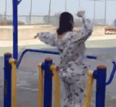

ie中的事件对象
要访问ie对象有几种不同的方式，取决于指定事件处理程序的方法，如果事件处理程序是使用attachEvent()添加的，n那么就会有一个event队形作为参数被传入事件处理程序函数中。
attachEvent 的ie绑定事件，ie11视乎不支持，没有这个属性。
ie的event对象同样也包含与创建它的事件相关的属性和方法。
cancelBubble boolean o/i 默认为false，将其设置为true可以取消事件冒泡，stopPropagation()
returnValue boolean o/i 默认为true，但将其设置为false可以取消事件的默认行为,preventDefault()
srcElement element o 事件的目标
type string o 被触发的事件类型
跨浏览器的事件对象
var EventUtil = {
addHandler:function(element,type,handler){
// 此处的handler函数需要单独提出来写
if(element.addEventListener){
//DOM2 ie11 非ie11-
element.addElementListener(type,handler,false);
}else if(element.attachEvent){
//DOM2 ie10-
element.attachEvent("on"+type,handler);
}else{
//DOM0 ie
element["on"+type] = handler;
}
},
removeHandler:function(element,type,handler){
// 此处的handler函数需要单独提出来写
if(element.removeEventListener){
element.removeEventListener(type,handler);
}else if(element.detachEvent){
element.detachEvent("on"+type,handler)
}else{
element["on"+type] = null;
}
},
getEvent:function(event){
return event || window.event
},
getTarget:function(event){
var e = event || window.event;
return e.srcElement || e.target;
},
preventDefault:function(event){
var e = event || window.event;
if(e.preventDefault){
e.preventDefault();
}else{
e.returnValue = false;
}
},
stopPropagation:function(event){
var e = event || window.event;
if(e.stopPropagation){
e.stopPropagation();
}else{
e.cancelBubble = true;
}
}
}
var btn4 = document.getElementById("test04");
var link5 = document.getElementById("test05");
btn4.onclick = function(event){
var event = EventUtil.getEvent(event);
console.log("事件对象");console.log(event);
var target = EventUtil.getTarget(event);
console.log("目标元素");console.log(target);
}
link5.onclick = function(event){
var event = EventUtil.getEvent(event);
EventUtil.preventDefault(event);
}
事件类型
UI事件：用户页面的元素交互触发
焦点事件：元素获得或失去焦点是触发 focus blur
鼠标事件：click.mouseover,mouseout,mousemove,mousedown,mouseup
滚轮事件：鼠标滚动滚轮
键盘事件：keydown,keyup (keyCode)
合成事件：输入法编辑器输入字符是触发
变动事件：当底层DOM发生变化时触发
DOMActivate 表示元素也被用户操作（通过鼠标 或 键盘）激活，DOM3中被废弃
load 当页面完全加载后在window上触发
unload ??? 页面卸载后在window上触发
error javascript错误是window上触发
select 用户选择文本框（input select）时触发
resize 窗口或框架大小发生变化时触发
scroll 滚动是触发

script标签同样有load的事件，引入js
EventUtil.addHandler(window,"load",function(){
var script = document.createElement("script");
EventUtil.addHandler(script,"load",function(event){
console.log("js加载完成");
console.log("jquery加载时间："+(Date.now()-beginTime))
});
script.src = "../publicJs/jquery.js";
document.body.appendChild(script);
var beginTime = Date.now();
});
css 的加载
EventUtil.addHandler(window,"load",function(){
var linkObj = document.createElement("link");
link.type = "text/css";
link.rel = "styleSheet";
EventUtil.addHandler(linkObj,"load",function(){
console.log("css添加时间"+(Date.now()-begin))
});
document.getElementsByTagName("head")[0].appendChild(linkObj);
linkObj.href = "http://365jia.cn/sfCombine/css/8f912d0d1be2d619e573fecc18ce654b.css";
var begin = Date.now();
});
EventUtil.addHandler(window,"scroll",function(){});
resize 事件
当浏览器窗口被调整到一个新的高度或者宽度时，就会触发resize事件。
EventUtil.addhandler(window,"resize",function(){
alert("resized")
});
scroll 事件
Event.addHandler(window,"scroll",function(event){
if(document.compatMode == "CSS1Compat"){
var w = document.docuemtElement.scrollTop || document.body.scrollTop;
// document.documentElement.scrollTop ie非兼容模式
// document.body.scrollTop ie兼容模式，chrome
console.log(document.documentElement.scrollTop);
}else{
console.log(document.body.scrollTop);
}
});
scroll resize 事件中尽量不要有太多的计算，由于事件变化过快，大量的计算会导致浏览器反应明显变慢。